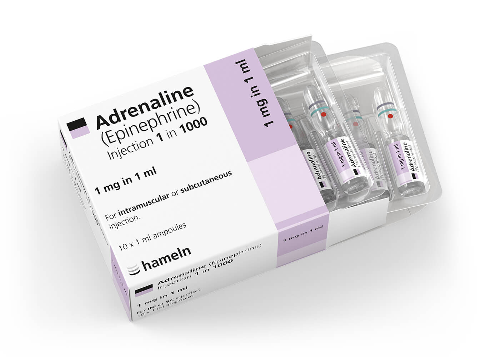

Adrenaline (Epinephrine)
Drug Class
Sympathomimetic
Pharmacology
Adrenaline is a catecholamine which primarily acts on the alpha (A) and beta (B) adrenergic receptors. The actions of these receptors cause an increase in heart rate (B1), an increase in the force of myocardial contraction (B1), increase in the irritability of the ventricles (B1), bronchodilation (B2) and peripheral vasoconstriction (A1).
Metabolism
Indications
- Cardiac arrest
- Anaphylaxis or severe allergic reaction
- Shock unresponsive to adequate fluid resuscitation
- Bradycardia with poor perfusion (unresponsive to atropine and/or pacing)
- Life-threatening severe asthma
- Impending upper airway obstruction due to inflammation e.g. inhalation burns
- Beta-blocker / calcium channel blocker toxicity
- Croup (moderate to severe)
Dosage
Cardiac arrest: 1mg IV repeated at 3 - 5min intervals. No maximum dose.
Anaphylaxis/severe allergic reaction: 0.5mg of 1:1000 undiluted (anterolateral thigh). Repeat every 5min if needed.
Shock unresponsive to fluid resuscitation: 2 - 10ug/min. Titrate to effect.
Resistant sympotmatic bradycardia (SBP < 85mmHg): 2 - 10ug/min. Titrate to effect.
Impending upper airway obstruction + croup: nebulisation (1ml of 1:1000 + 4mls N/S. If necessary, increase to 2 - 4mg adrenaline diluted with 5ml N/S)
Contraindications
- None in an emergency setting
Precautions
- Do NOT mix with alkaline solutions e.g. sodium bicarbonate
- Hypertension
- Angina, myocardial ischaemia, CCF
- Diabetes mellitus
- Hyperthyroidism
- Pregnancy
- Stimulant abuse e.g. cocaine. AVOID unless patient is pulseless
Side Effects
- Anxiety, confusion, headache
- Hypertension
- Palpitations/tachyarrhythmias
- Pupil dilation
- Nausea & vomiting
- Hyperglycaemia
Presentation
Ampoule - 1mg/ml adrenaline (1:1000)
Ampoule - 1mg/10ml adrenaline (1:10 000)
Pharmacokinetics
| Onset | Duration | Half-life |
|---|---|---|
| 30sec (IV) 60sec (IM) | 5 - 10min | 2min |
Special Notes
- Adrenaline infusion preparation: Mix 3 mg (3 mL) of 1:1000 adrenaline (epinephrine) with 47 mL of sodium chloride 0.9% to achieve a final concentration of 60 microg/mL.
- Adrenaline (epinephrine) infusions must be administered through a dedicated line.
- All cannulae with adrenaline infusions should be as proximal as possible, be freely flowing, and be watched closely for extravasation.
- NIBP cuffs must not be placed on limbs with infusions to ensure flow is not obstructed.